Programação
Os palestrantes e temas específicos ainda estão sendo confirmados e divulgados aos poucos. Por enquanto, fique no aguardo e acompanhe as novidades aqui no site e nas redes sociais do CAFís.
- A definir (palestrante em breve)
- Confirmado
| Horário | Quarta-feira 19/08/2026 | Quinta-feira 20/08/2026 | Sexta-feira 21/08/2026 |
|---|---|---|---|
| 08h00 – 08h30 | CREDENCIAMENTO | PALESTRA | PALESTRA |
| 08h30 – 09h30 | CERIMÔNIA DE ABERTURA | Pouya Mehdipour Teoria do Caos e suas Aplicações para a Física | PALESTRA |
| 09h30 – 10h00 | COFFEE BREAK | COFFEE BREAK | |
| 10h00 – 10h30 | PALESTRA | Cezar Luiz De Mari Filosofia da ciência como veículo de formação humana nos âmbitos político e social | Filipe Menezes (UaiFísica) Relatividade Geral e Gravitação Quântica: uma introdução à Física Teórica |
| 10h30 – 11h00 | PALESTRA | ||
| 11h00 – 12h00 | MESA REDONDA 10 anos de Centro Acadêmico de Física: Olhar o passado é pensar o futuro | Renata Moreira Materiais Avançados e Tecnologias Sustentáveis para a Produção de Hidrogênio | Vinícius Catão Neurociências como ferramenta no ensino de ciências |
Intervalo de Almoço — 12h30 às 14h00
| Horário | Quarta-feira 19/08/2026 | Quinta-feira 20/08/2026 | Sexta-feira 21/08/2026 |
|---|---|---|---|
| 14h00 – 14h30 | Joana D'Arc Hollerbach Novo Ensino Médio no Brasil: impactos na vida acadêmica | Carmem Maia Gilardoni Tema surpresa | Andreza Subtil Síntese de pontos quânticos |
| 14h30 – 15h00 | Mariana Brandão Aplicações de pontos quânticos | ||
| 15h00 – 15h30 | PALESTRA | PALESTRA | PALESTRA |
| 15h30 – 16h00 | APRESENTAÇÃO DE TRABALHO | APRESENTAÇÃO DE TRABALHO | |
| 16h00 – 16h30 | COFFEE BREAK | COFFEE BREAK | COFFEE BREAK |
| 16h30 – 17h00 | PALESTRA | PALESTRA | MESA REDONDA Física como ciência-mãe |
| 17h00 – 17h30 | Orlando Fonseca Tema surpresa | Anésia Santos Física em sistemas biológicos | ENCERRAMENTO |
| 17h30 – 18h00 | Mariana Brandão Uma breve história do Departamento de Física | ||
| 18h30 – 20h30 | MINICURSOS |
Palestrantes e Mesas Reveladas
Aos poucos a SEAFís vai tomando forma! Confira os palestrantes e mesas redondas já confirmados.
Física da Matéria Condensada: uma introdução
Afranio Rodrigues Pereira
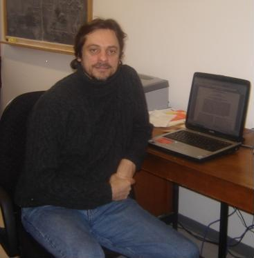
Possui graduação em Física pela Universidade Federal de Viçosa (1988) e doutorado em Física pela Universidade Federal de Minas Gerais (1995). Pós Doutorados na: Universidade Federal de Minas Gerais (1996); Bologna University, Bolonha, Itália (2006); e Visiting Scientist (Pesquisador visitante) no Max Planck Institute for the Physics of Complex Systems, em Dresden, Alemanha (2010 e 2014). Atualmente é professor Titular do Departamento de Física da Universidade Federal de Viçosa (UFV). Foi um dos idealizadores e criadores do Programa de Pós-Graduação (a nível de Mestrado e Doutorado) do Departamento de Física da UFV. Participou também como membro da câmara CEX (Ciências Exatas e Materiais) da FAPEMIG (Fundação de Amparo a Pesquisa do Estado de Minas Gerais) no período de 2012 a 2015 (quatro anos). Tem experiência na área de Física, com ênfase em Teorias em Física da matéria condensada, em geral com o uso de técnicas de teorias de campos e simulações computacionais, atuando principalmente nos seguintes temas: a) Sistemas de spins ''clássicos'' em baixas dimensões; b) Excitações topológicas em física da matéria condensada tais como vórtices, skyrmions, solitons; c) Magnetismo ''quântico'' em baixas dimensões: spin chains, spin ladders e sistemas de camadas; d) Nanomagnetismo; e) Transições de fase; f) Frustrações Geométricas em sistemas magnéticos naturais e artificiais (liquidos e gelos de spin); g) Monopolos Magnéticos e strings em gelos de spin bidimensionais;h) Novos materiais como grapheno e isolantes topológicos.
Síntese de pontos quânticos
Andreza Germana da Silva Subtil
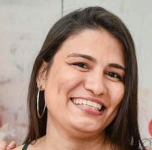
Possui graduação em Bacharelado e Licenciatura em Física pela Universidade Federal de Viçosa (2003), mestrado em Fisica Aplicada pela Universidade Federal de Viçosa (2004), e adquiriu o título de Doutor em Ciências pelo Departamento de Física da Universidade Federal de Minas Gerais (2008). Possui formação na área de Física Experimental, atuando nos seguintes temas: transporte eletrônico em nanoestruturas semicondutoras e propriedades ópticas de dispositivos e materiais semicondutores de baixa dimensionalidade. Atualmente tem trabalhado com produção e caracterização óptica de pontos quânticos coloidais, pontos de carbono, nanopartículas de polímeros conjugados e nanocompósitos. Mãe das gêmeas Júlia e Jéssica.
Física em sistemas biológicos
Anésia Aparecida dos Santos
Possui graduação (bacharelado e licenciatura) em Ciências Biológicas pela Universidade Federal de Viçosa (1994) e mestrado em Medicina Veterinária pela Universidade Federal de Viçosa (2000). Tem experiência na área de Ciências Biológicas, com ênfase em Anatomia Patológica e Patologia Clínica, atuando principalmente nos seguintes temas: ciclo reprodutivo de oligosarcus argenteus e biologia celular e estudo da fase de transição de células tumorais e normais em cultura. Doutoramento no curso de Genética e Melhoramento atuando na área de Genética Vegetal sub-área de Biologia Molecular. Atualmente atua na área de genômica funcional no projeto Análise funcional de proteínas cinases LRRII-RLK do hospedeiro que interagem com proteínas de movimento núcleo-citoplasma de geminivirus bem como na área de física biológica avaliando os efeitos de compostos derivados de fármacos e de drogas que interagem com a molécula de DNA na morte celular para aplicações quimioterápicas.
Tema surpresa
Carmem Maia Gilardoni
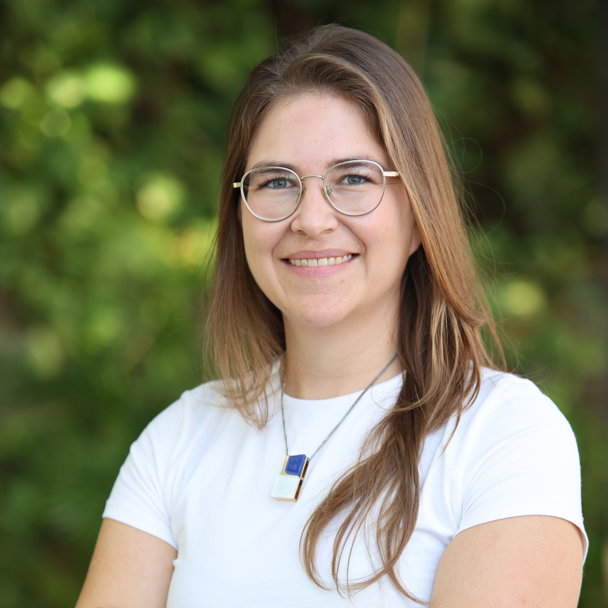
Sou Pesquisadora C-I no Centro Brasileiro de Pesquisas Físicas, uma unidade de pesquisa para o progresso da pesquisa em Física sob o Ministério de Ciência, Tecnologia e Inovação no Rio de Janeiro. Aqui, eu realizo pesquisa focada em interações entre fótons e sistemas quânticos em materiais, e em como utilizar e desenhar simetrias espaciais em escala atômica para ganhar funcionalidades para aplicações quânticas.Antes disso, passei dois anos como pesquisadora de pós doutorado no grupo do Prof. Mete Atature no Laboratório Cavendish, Universidade de Cambridge, financiada pelo Conselho de Pesquisa Holandês por meio de um projeto Rubicon. Neste período, investiguei defeitos atômicos e excitons em materiais 2D. Completei minha tese de doutorado na Universidade de Groningen sob supervisão do Prof. Caspar van der Wal. Minha tese recebeu o prêmio 2022 Ehrenfest-Afanassjewa thesis prize do Conselho de Física Holandês. Também recebi o prêmio para jovens pesquisadores 2022 New Journal of Physics Early Career Award, e uma menção honrosa no 2022 For Women In Science Rising Talent Prize da LOréal Netherlands e Netherlands Commission for Unesco. Página pessoal.
Filosofia da ciência como veículo de formação humana nos âmbitos político e social
Cezar Luiz De Mari

Possui graduação em Filosofia, mestrado e doutorado pela Universidade Federal de Santa Catarina (1993/1998/2006); pós-doutorado pela Universidade Federal de Minas Gerais (2019/2020) . Atualmente é docente titular da Universidade Federal de Viçosa - UFV. Atua no Programa de Pós-Graduação em Educação - PPGE/DPE/UFV. Membro da International Gramsci Society (Seção BR - 2015/RJ), e da RED Latinoamericana para el cambio social (desde 2020). Líder do Grupo de Pesquisa Educação, Conhecimento e Processos Educativos e do Grupo de Estudos dos Clássicos Contemporâneos em Educação - GECCE (2010-atual). Membro fundador da Cátedra Paulo Freire (DPE/UFV). Temas de pesquisa: educação superior, internacionalização, epistemologia, sociedade civil e formação estudantil. Dentre outros escritos organizou as obras Educação e Formação Humana: múltiplos olhares sobre a práxis educativa (2021); Diálogos interdisciplinares: questões sobre a práxis universitária (2014) e Da Escola Básica à Universidade: o trabalho docente e a educação sob pressões (2021) 10 Lições sobre Gramsci (2023); Educação Emancipadora na atualidade: novas perspectivas na América Latina e no sul da europa (2025); Educação crítica, formação humana, políticas e práxis sociais (2026). Tem experiência na área de Educação, com ênfase em Filosofia da Educação, políticas educacionais atuando principalmente nos seguintes temas: educação, conhecimento, universidade, sociedade do conhecimento, política educacional, temas de fronteira e pensamento gramsciano.
Relatividade Geral e Gravitação Quântica: uma introdução à Física Teórica
Filipe Henrique de Castro Menezes (UaiFísica)
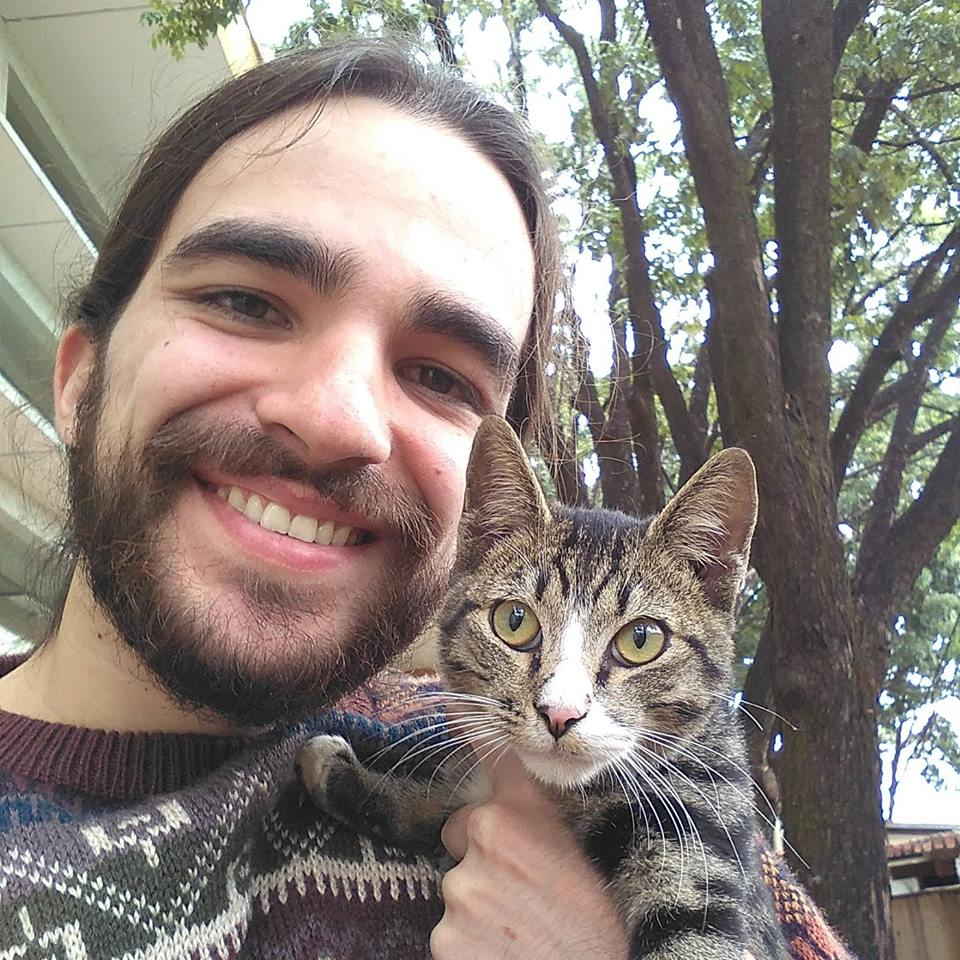
Bacharel, mestre e doutor em física pela Universidade Federal de Minas Gerais. Faz parte do grupo GFT (Grupo de Física Teórica Fundamental), trabalhando nas áreas de relatividade geral e gravitação quântica de laços. Fundador do canal no YouTube "UaiFísica".
Modelagem de deposição de filmes finos
Ismael Segundo da Silva Carrasco
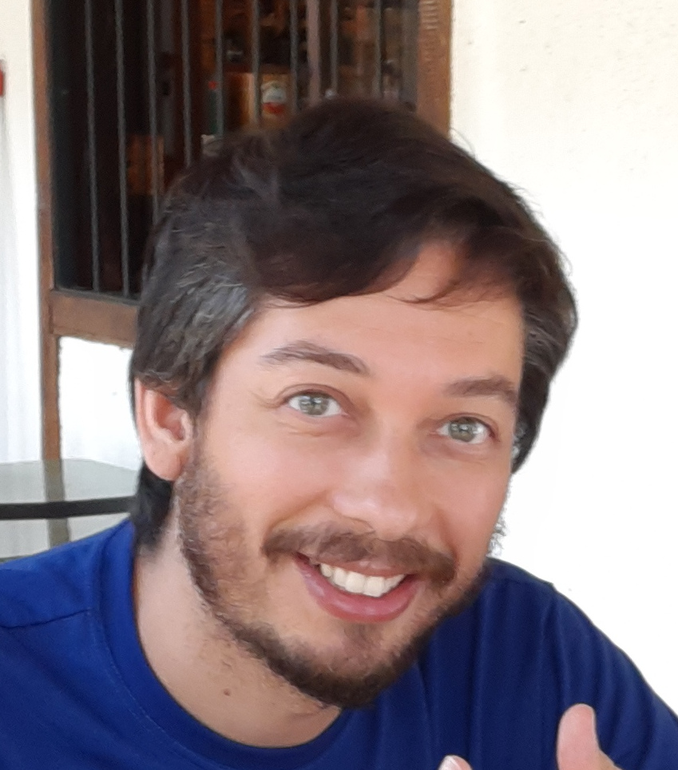
Sou bacharel em Física pela Universidade Federal de Viçosa (2012), onde desenvolvi atividades de pesquisa em Física Biológica. Nesse período, investiguei como o comprimento de persistência e o comprimento de contorno do DNA são alterados pela interação com Espermidina e Ciclodextrina, adquirindo experiência em Microscopia de Força Atômica e Pinças Ópticas. Também concluo o mestrado (2014) e o doutorado (2018) em Física pela mesma instituição. A partir do mestrado, meus estudos se concentraram em simulações de dinâmica de interfaces usando modelos de deposição de filmes finos, com ênfase na classificação de universalidade e em possíveis subdivisões associadas à geometria global da interface. Entre 2018 e 2021, fui bolsista FAPERJ Nota 10 na Universidade Federal Fluminense, onde apliquei métodos da Física Estatística a problemas de Geociências, incluindo simulações de dissolução mineral e transporte reativo em rochas e meios porosos por meio do método de Monte Carlo Cinético. Atuei como professor de Física na Universidade de Brasília entre 2021 e 2025, sendo redistribuído para a Universidade Federal de Viçosa em dezembro de 2025. Me interesso por fenômenos críticos fora do equilíbrio de forma geral.
Novo Ensino Médio no Brasil: impactos na vida acadêmica
Joana D'Arc Germano Hollerbach
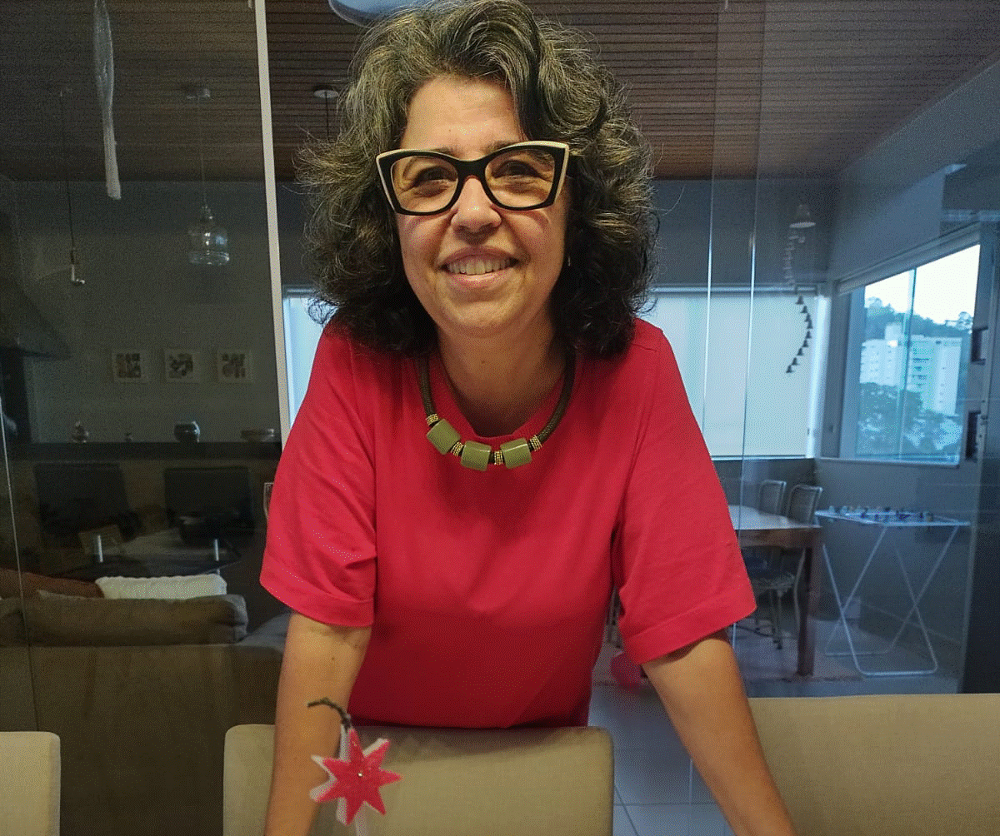
Possui graduação em Administração pela Faculdade de Administração de Governador Valadares (1986), Licenciatura em História pela Universidade Vale do Rio Doce (2003), Mestrado em Educação pela Universidade Federal de Minas Gerais (2007) e Doutorado em Educação pela Universidade Federal de São Carlos (2016). Atualmente é professora do magistério superior, Associado I, da Universidade Federal de Viçosa. Tem experiência na área de Educação, atuando principalmente nos seguintes temas: história da educação, ensino de história, políticas públicas para a educação básica, Ensino Médio, trabalho e educação.
Polímeros e sensores eletroquímicos
Kairon Márcio de Oliveira
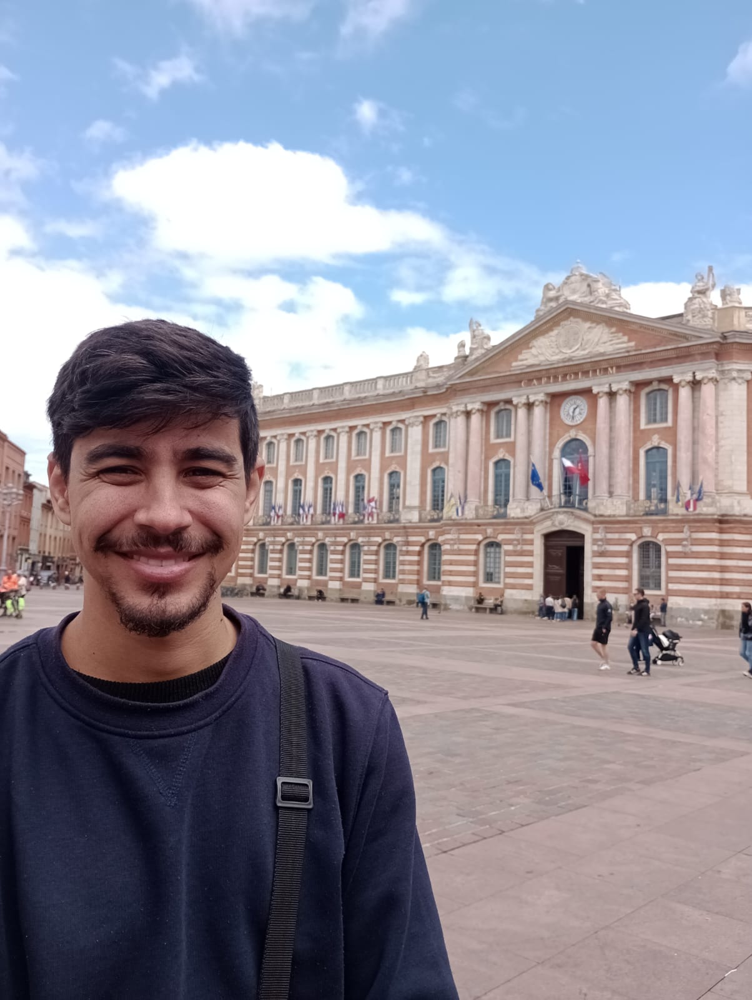
Doutorado em Física pelo Departamento de Física da Universidade Federal de Viçosa (UFV), no Laboratório de Microfluídica e Fluidos Complexos (LMFFC), com período sanduíche de 10 meses no departamento de polímeros condutores do Institute of Macromolecular Chemistry (IMC) - Czech Academy of Science, Praga - Republica Tcheca. Bacharel em Física pela Universidade Federal de Viçosa (2020). Possui experiência na área da Física da Matéria Mole, com ênfase na síntese e caracterização de soluções coloidais, como géis poliméricos, surfactantes, polímeros condutores, cossolutos e estruturas supramoleculares de polianilina (tais como partículas, bastões, tubos e placas), bem como a sua aplicação em sensores eletroquímicos e supercapacitores. Possui capacitação em diversas técnicas experimentais tais como: Espalhamento Dinâmico e Estático de Luz, Espectroscopia Raman, Espectroscopia de Infravermelho por Transformada de Fourier, Difração de Raios-X, Pinça ótica, Microscopia Eletrônica de Varredura e Análises Eletroquímicas.
A luz como Sonda: Princípios e Aplicações da Espectroscopia Raman
Luciano de Moura Guimarães
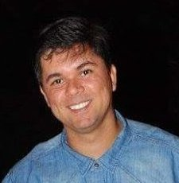
Professor associado do Departamento de Física da Universidade Federal de Viçosa (UFV). Doutor em Ciências (2011) pela Universidade Federal de Minas Gerais (UFMG), com enfoque em espectroscopia Raman ressonante aplicada ao estudo de nanomateriais de carbono, como nanotubos, grafeno e poliinas. Pós-doutorado (2012) no Laboratório de Espectroscopia Raman da UFMG, com ênfase em investigações sobre o efeito Raman intensificado por superfícies (SERS). Mestre em Física Aplicada (2006) e bacharel e licenciado em Física (2004) pela Universidade Federal de Viçosa. Durante a graduação e o mestrado, foram desenvolvidas pesquisas baseadas em espectroscopia no infravermelho próximo aplicada à tecnologia da madeira, eletrodeposição e caracterização de filmes semicondutores, respectivamente. Atualmente, minhas atividades de pesquisa envolvem estudos em espectroscopia Raman e fotoeletroquímica, com foco na caracterização e investigação de propriedades físico-químicas de materiais. Além disso, desenvolvo projetos nas áreas de eletrônica e instrumentação científica, utilizando plataformas de prototipagem e sistemas embarcados, como Arduíno e ESP32.
Física Biológica
Marcelo Lobato Martins
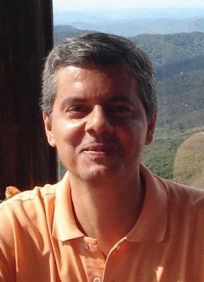
Graduado em Física pela Universidade Federal de Minas Gerais (1983), mestre em Física pela Universidade Federal de Minas Gerais (1986) e doutor em Física pelo Centro Brasileiro de Pesquisas Físicas (1994). Atualmente, sou professor Titular da Universidade Federal de Viçosa e realizo pesquisas nas áreas de Sistemas Complexos e Física Biológica. Especificamente, buscamos caracterizar experimentalmente e construir modelos teóricos baseados em agentes e de múltiplas escalas para a formação de padrões em sistemas biológicos, matéria ativa, fenômenoa sociais e econômicos. Em física biológica, nosso trabalho está concentrado na carcinogênese e progressão do câncer, invasão biológica e em biofísica celular, como a dinâmica de migração, agregação e atividade de membrana de células em cultura. Nas áreas de sociofísica e econpfísica , temos investigado a dinâmica de formação de opiniões, a propagação de rumores e a dinâmica da distribuição de riqueza em sistemas sociais modelados como redes complexas adaptativas.
Aplicações de pontos quânticos
Mariana da Costa Novo Pimenta Brandão
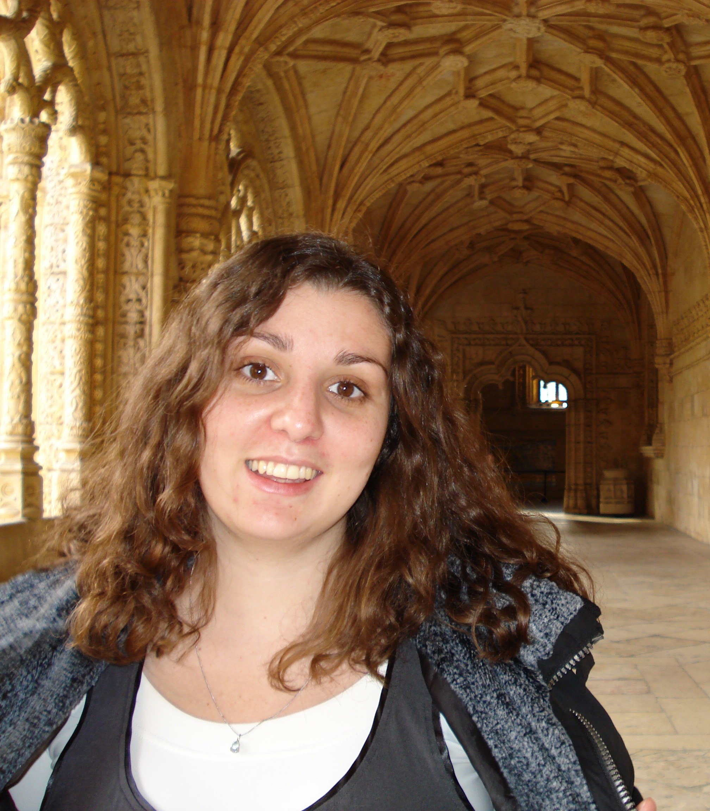
Possui graduação em Física pela Universidade Federal de Juiz de Fora (Brasil), mestrado em física pela Universidade Federal de Juiz de Fora (Brasil) e doutorado em Ciências Física pela Pontifícia Universidade Católica do Rio de Janeiro. Possui pós-doutorado na Universidade de São Paulo no projeto de Caracterização Ótica de Tecidos da Tireoide e Paratireoide e pós-doutorado na Universidade Federal de Juiz de Fora no projeto Novas Metodologias para Caracterizar Produtos Lácteos e Detectar Fraudes ou Adulterações. Atualmente é Professora Adjunto A da Universidade Federal de Viçosa. Tem experiência na área de Física, com ênfase em Prop. Óticas e Espectrosc. da Mat. Condens; Outras Inter. da Mat. com Rad. e Part., atuando principalmente nos seguintes temas: espectroscopia, luminescência, microscopia, biofísica, física aplicada a biologia, medicina e farmácia, física aplicada a ciências de alimentos.
Tema surpresa
Orlando Pinheiro da Fonseca Rodrigues
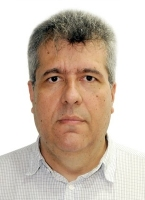
Professor Titular do Departamento de Física da Universidade Federal de Viçosa. Graduado (Bacharel) em Fisica pela Universidade Federal de Minas Gerais (1985); Mestre em Física/Astrofísica pela Universidade Federal de Minas Gerais (1987); Doutor em Astrofísica pelo Observatório Nacional (1995). Tem experiência na área de Física, com ênfase em Ensino de Física, História da Física e Astronomia. Coordenador do Núcleo de Ensino Integrado de Ciẽncias e Matemática (1994-1996); Chefe do Departamento de Física de 1996 a 2000; Coordenador do Cursos de Especialização (Lato-Senso) em Ensino de Física (2000-2004); Coordenador Técnico da Comissão Permanente de Vestibular e Exames (2001 a 2009); Diretor de Vestibular e Exames (2009 a 2011); Coordenador do Curso de Licenciatura em Física (2011-2013); Coordenador de Área (Física) do Programa Institucional de Bolsas de Iniciação à Docência (PIBID/CAPES/UFV) 2011-2018; Coordenador do Programa de Licenciaturas Internacionais UFV-Universidade de Coimbra 2013/2015 (Física, Matemática e Química); Membro do Mestrado Nacional Profissionalizante em Ensino de Física (2013-); Chefe do Departamento de Física (2013-2019).
Teoria do Caos e suas Aplicações para a Física
Pouya Mehdipour
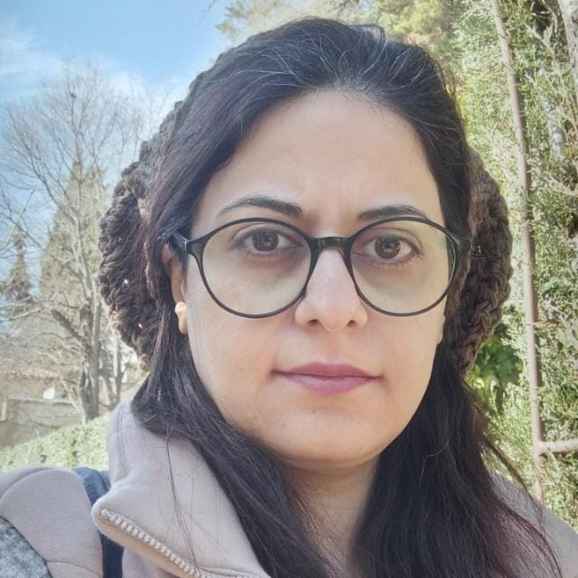
Mestre em Mathematica pelo Instituto de Estudos Avançados e Ciências Básicas (2009) e doutor em Matemática pela Universidade de São Paulo (2014). Tem experiência na área de Matemática, com ênfase em Sistemas Dinâmicos e Teoria do Caos, atuando principalmente nos seguintes temas: Dinâmica Hiperbólica Suave, Teoria Ergódica, Hiperbolicidade Não Uniforme, Dinâmica Simbólica e Autômatos Celulares.
Materiais Avançados e Tecnologias Sustentáveis para a Produção de Hidrogênio
Renata Pereira Lopes Moreira
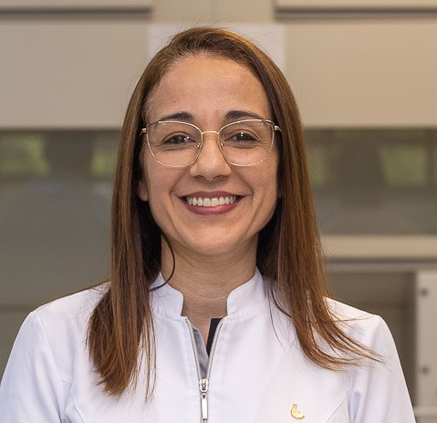
Possui formação Técnica em Química pelo CEFET-MG (1998), Licenciatura em Química pela UFMG (2005), Mestrado em Química Analítica pela UFMG (2008), Doutorado em Ciências/Química (2012), com estágio sanduíche na Universidade de Almería (Centro de Excelência Agro-alimentar), e Pós-doutorado na Université de Bordeaux sob a supervisão do Prof. Didier Astruc. Tem experiência na área de Química, com ênfase em Química Ambiental e Análise de Alimentos. Desenvolve pesquisas nos seguintes temas: remoção de poluentes emergentes por processos de adsorção, processos oxidativos avançados (POAs), processos redutivos avançados envolvendo metais de valência zero, processos redutivos com nano-redutores bimetálicos, síntese de materiais a partir de resíduos eletrônicos, síntese e funcionalização de biochar, evolução de hidrogênio a partir de NaBH4 e ácido fórmico, uso de biomassa para produção de biochar como suporte de catalisadores, suspensões de nanopartículas de prata como nanosensores, síntese de carbon-dots, além do desenvolvimento e validação de métodos analíticos.Possui experiência no desenvolvimento e validação de métodos de análise de resíduos de contaminantes em alimentos e domínio das técnicas analíticas de espectrofotometria de absorção molecular UV-Vis, cromatografia e espectrometria de massas. Tem interesse em inovação e tecnologia, possuindo cinco registros de patente e duas cartas-patente. Participou do Programa de Aceleração de Tecnologia Programa Escale-se Summit Fase de Diagnóstico, avançando para a segunda fase. É Professora Associada III de Química Analítica no Departamento de Química da Universidade Federal de Viçosa. Em 2024, recebeu o prêmio Destaque Jovem Pesquisador no Encontro Regional da Sociedade Brasileira de Química de Minas Gerais (ERSBQ-MG). É membro da Comissão Permanente de Propriedade Intelectual (CPPI) e membro suplente do Conselho Universitário da UFV. É mãe de duas filhas, Rebeca e Sarah.
Fabricação de isolantes topológicos
Sérgio Luis de Abreu Mello
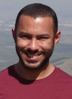
Formou-se em Física pela UFRJ em 2009 (bacharelado), com mestrado e doutorado (2015) em Física nesta mesma instituição. Realizou doutorado sanduíche (2014) na ''University of Notre Dame'' - EUA. Em 2015, realizou pós-doutorado no CBPF. Tem experiência com: síntese e modificação de filmes finos utilizando feixes de íons; nanofabricação de estruturas em sala limpa; técnicas de caracterização experimental de materiais semicondutores. É Professor Adjunto do Departamento de Física da Universidade Federal de Viçosa. Tem trabalhado em problemas de física da matéria condensada relacionados com propriedades magnéticas e de transporte elétrico em materiais e dispositivos com forte apelo para spintrônica.
Construção de uma MBE
Sukarno Olavo Ferreira
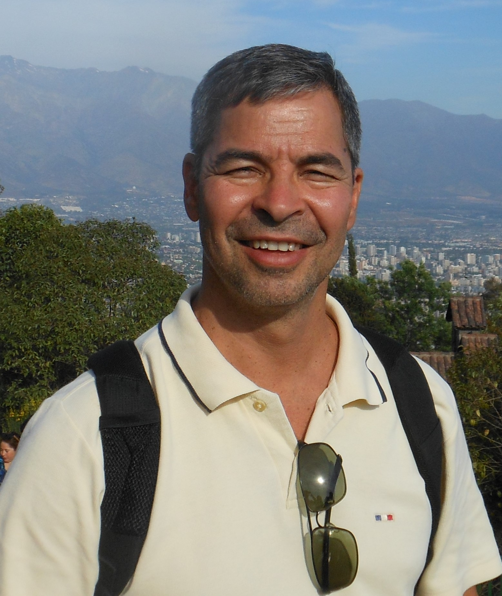
Graduado em Física pela Universidade Federal de Minas Gerais (1983), mestre em Eletrônica e Telecomunicações-Semicondutores pelo Instituto Nacional de Pesquisas Espaciais (1986) e doutor em Física de Semicondutores - Johannes Kepler Universität-Linz (1995). Atualmente é Professor Titular na Universidade Federal de Viçosa. Atua na área de Física da Matéria Condensada, com ênfase em crescimento e caracterização de semicondutores, atuando principalmente nos seguintes temas: técnicas de crescimento epitaxial (HWE, MBE), nanoestruturas (poços e pontos quânticos) e caracterização de materiais (difração de raios-x, microscopia de força atômica).
Neurociências como ferramenta no ensino de ciências
Vinícius Catão de Assis Souza
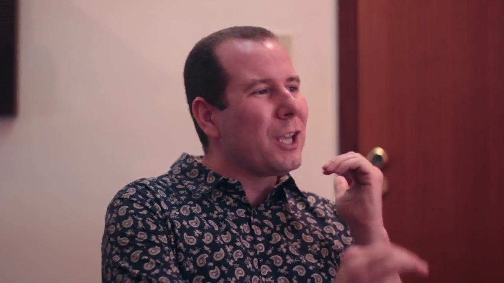
Licenciado em Química pela Universidade Federal de Minas Gerais (UFMG), especialista em Educação Inclusiva pela Escola de Governo da Fundação João Pinheiro (MG), mestre e doutor em Educação (Ensino de Ciências) pela Faculdade de Educação da UFMG. Realizei estágio de pós-doutorado na Faculdade de Educação da USP, em parceria com o Centro de Formação de Escolas António Sérgio (Portugal). Professor no Departamento de Química da Universidade Federal de Viçosa, onde atuo no setor de Educação em Química. Tenho experiência profissional com temas relacionados ao ensino de Ciências/Química em espaços não formais de educação, formação inicial e continuada de professores/as, inclusão de surdos/as, educação bilíngue para surdos/as e diversidade na Escola, com trabalhos voltadas à educação sociocientífica e socioambiental, educação e cidadania, História da Ciência aplicada ao ensino, alfabetização científica e processos de ensino e aprendizagem em contextos inclusivos.
Polarização e formação de opinião em Sistemas Complexos
Wesley Francis Costa Cota
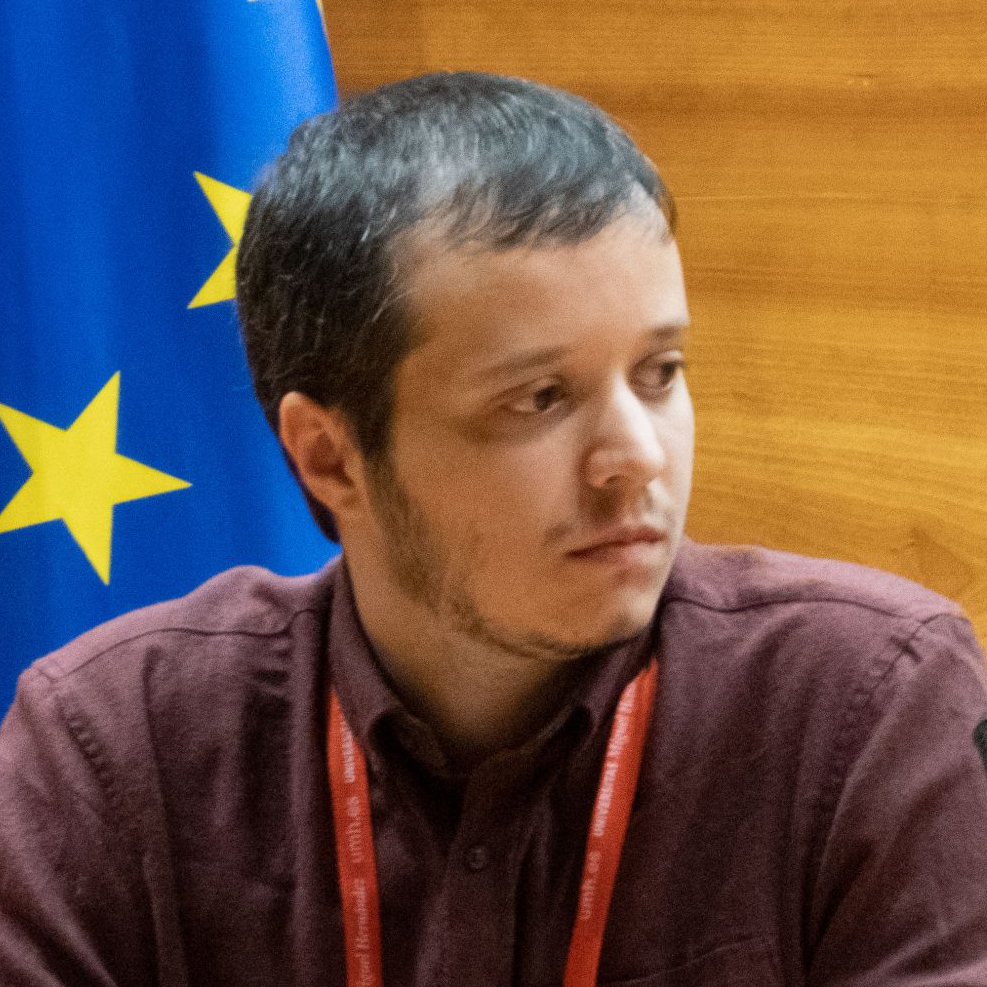
Professor no Departamento de Física (DPF) da Universidade Federal de Viçosa (UFV). Doutor em Física (2017-2020) e bacharel em Física (2013-2016) pela Universidade Federal de Viçosa (UFV). Membro do INCT-DigiSaúde. Foi pesquisador em nível de pós-doutorado (FAPESP) no Centro Conjunto Brasil-Reino Unido para Descoberta, Diagnóstico, Genômica e Epidemiologia de Arbovirus (CADDE) do Instituto de Medicina Tropical da Universidade de São Paulo (USP) e Universidade de Oxford, e pesquisador voluntário na Faculdade de Medicina da Unesp-Botucatu, de 2022 a 2024. Pós-doutorado no Departamento de Física da UFV de 2020 a 2022. Atuo no estudo de modelos para propagação de epidemias e aplicações em COVID-19 e Dengue, na caracterização de redes complexas e na coleta de dados (data mining) de redes sociais como o X e Bluesky. Em 2024, foi um dos 5 selecionados pela Academia Brasileira de CIências para representar o Brasil no 73rd Lindau Nobel Laureate Meeting. Página pessoal.
10 anos de Centro Acadêmico de Física: Olhar o passado é pensar o futuro
Henrique Mota

Sou Henrique, bacharel e mestre em Física pela UFV. Entre 2015 e 2017, participei da gestão do Centro Acadêmico de Física e, nos anos seguintes, continuei contribuindo como conselheiro.
Durante esse período, atuei na busca por melhorias para o curso e ajudei a levar ao Colegiado e à Coordenação demandas dos estudantes que, por muito tempo, não tiveram o devido espaço. Essa experiência me ensinou a ouvir diferentes perspectivas, representar demandas coletivas e buscar soluções por meio do diálogo, habilidades que levo comigo até hoje, tanto na vida pessoal quanto profissional.
Nos últimos cinco anos, tenho atuado no mercado de trabalho nas áreas de ciência de dados e operações.
Milena Lima
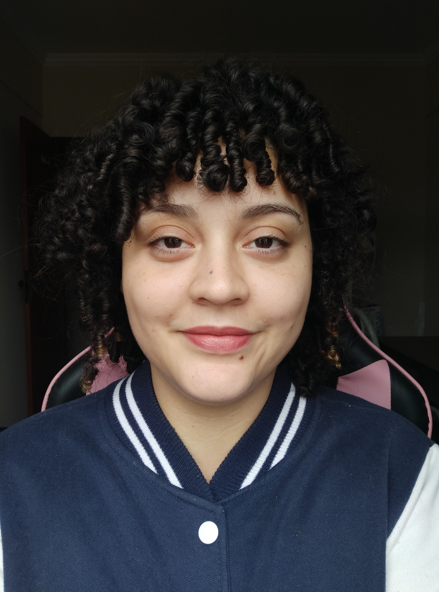
No começo de 2015, no dia da confirmação de matrícula, enquanto vários veteranos procuravam seus calouros, as primeiras palavras que ouvi ao falar que eu ia fazer Física foram: "Nossa, meus pêsames". E naquele momento, eu achei engraçado - por conta de todo o estereótipo que os cursos de ciências exatas tem. Mas aquelas palavras voltaram várias vezes na minha memória depois do começo do período, quando eu percebi que na verdade era assim que os próprios alunos se sentiam sobre o curso. Havia uma grande desconexão - não sabíamos ao certo quem eram nossos veteranos e eles não sabiam quem eram os seus; havia uma cultura ultrapassada de trote por parte de um pequeno grupo e nenhuma rede de suporte para calouros. E enquanto víamos outros cursos fazendo recepções, calouradas, apadrinhamento, eventos acadêmicos, etc; para nós a sensação era mesmo de estar "sobrevivendo" ao curso. Foi por tudo isso que, após uma palestra provocativa de Tópicos de Física, do professor Orlando, várias ideias começaram a surgir. Foi quando senti pela primeira vez que podíamos fazer algo para mudar aquele ambiente. O tempo passou e as ideias foram saindo do papel: Um grupo amador de astronomia e o Centro Acadêmico de Física. A criação do CAfis movimentou todas as frentes: nós calouros, veteranos e professores. De repente, se perguntar o que os alunos querem ou que os alunos precisam no curso de física não parecia mais tão absurdo. No primeiro ano de gestão, aprendemos muito e erramos muito mais - mas entre todas as dificuldades, nós presenciamos mudanças sutis que indicavam o começo de uma transformação. O CAfis passou a ser um ponto de apoio, um ponto de conexão para todos os estudantes. E no ano seguinte, na confirmação de matrícula, quando nós como membros do CAfis estávamos lá com tintas e plaquinhas pra receber os novos calouros pudemos garantir que a primeira coisa que eles ouvissem ao falar que seriam da Física fosse: "Sejam bem vindos". E a partir daí, o resto é história.
Luís Xavier
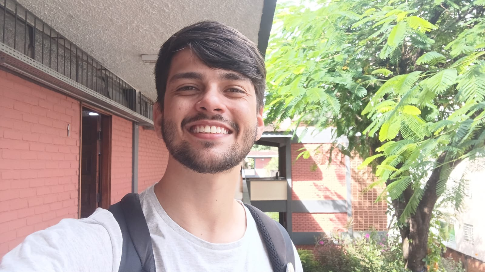
Luís Xavier é graduado em Licenciatura em Física pela Universidade Federal de Viçosa (UFV), professor efetivo de física na Rede Estadual de Educação de Minas Gerais e realizar o mestrado no Departamento de Educação - UFV. Durante a graduação, Luís atuou em movimentos estudantis e de educação, em especial no Centro Acadêmico de Física (CAFÍS), que compôs pastas de Comunicação, Financeiro e Coordenador Geral da entidade entre 2018 e 2021, além de uma rápida passagem pela Comissão Gestora para retorno após a pandemia em 2022.
Sarah El Haouche
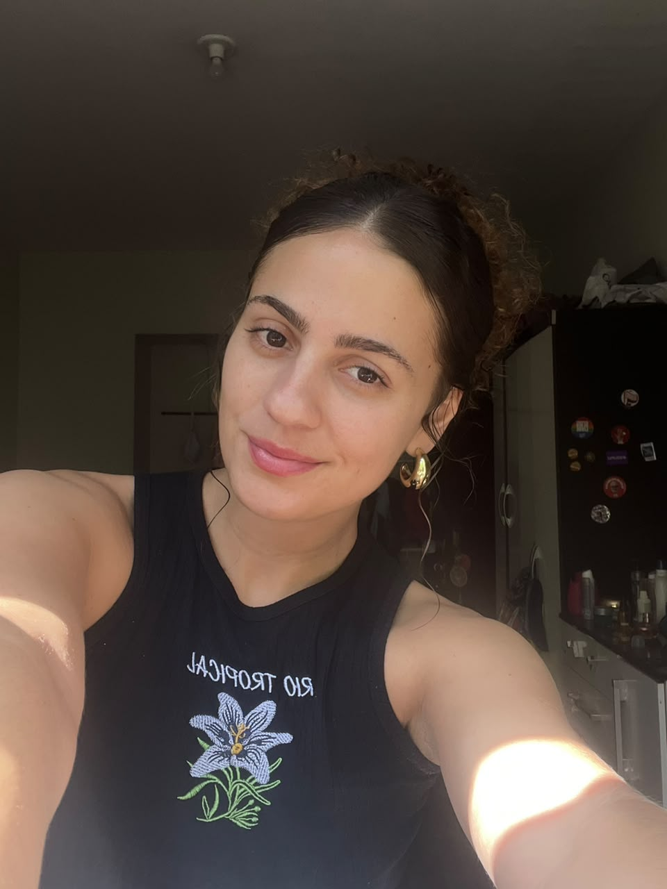
Entrei na UFV em 2020 e, logo na chegada, fui muito bem recebida pelo pessoal do CAFís da época. Eles foram essenciais para mim, principalmente por eu ter vindo de muito longe e sem conhecer ninguém na universidade. Essa acolhida foi a maior motivação para eu me interessar pelo Centro Acadêmico: em 2021, fui chamada para integrar a gestão Prisma e, posteriormente, em 2023, me tornei presidente da chapa Noether. Agora, finalizando o curso de Física, tenho a absoluta certeza de que o Centro Acadêmico foi um grande aliado na minha caminhada até aqui.
Luis Henrique de Freitas
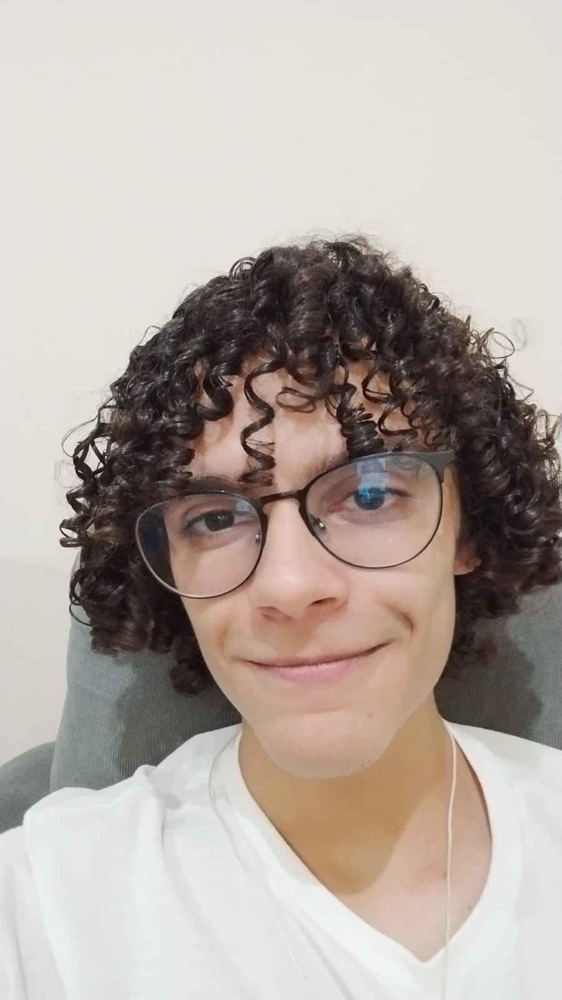
Meu nome é Luís Henrique de Freitas, participei do Centro Acadêmico no período de 2025/2026 pela chapa Frota42, minha experiência no CA é extremamente positiva, tendo que aprender muitas coisas do zero, mas sempre contando com a ajuda de pessoas ao meu redor. Essa vivência abriu portas e proporcionou conexões importantes com os alunos e a universidade. Em geral fico feliz de poder ser mais um tijolo nessa história em construção!
Uma breve história do Departamento de Física
Mariana da Costa Novo Pimenta Brandão
Possui graduação em Física pela Universidade Federal de Juiz de Fora (Brasil), mestrado em física pela Universidade Federal de Juiz de Fora (Brasil) e doutorado em Ciências Física pela Pontifícia Universidade Católica do Rio de Janeiro. Possui pós-doutorado na Universidade de São Paulo no projeto de Caracterização Ótica de Tecidos da Tireoide e Paratireoide e pós-doutorado na Universidade Federal de Juiz de Fora no projeto Novas Metodologias para Caracterizar Produtos Lácteos e Detectar Fraudes ou Adulterações. Atualmente é Professora Adjunto A da Universidade Federal de Viçosa. Tem experiência na área de Física, com ênfase em Prop. Óticas e Espectrosc. da Mat. Condens; Outras Inter. da Mat. com Rad. e Part., atuando principalmente nos seguintes temas: espectroscopia, luminescência, microscopia, biofísica, física aplicada a biologia, medicina e farmácia, física aplicada a ciências de alimentos.
Geometria Diferencial para Físicos: Curvatura, Métrica e Noções de Relatividade Geral
- CCE, 4º andar
- 20 vagas
Neste minicurso serão introduzidos conceitos fundamentais de Geometria Diferencial em uma e duas dimensões, com foco na construção de uma compreensão intuitiva de ideias como distância, métrica e curvatura. A partir de exemplos geométricos simples, os participantes serão levados a compreender como a curvatura pode ser descrita matematicamente e interpretada fisicamente.
Em seguida, esses conceitos serão aplicados a modelos simplificados em 1+1 dimensões, permitindo uma introdução intuitiva a algumas das ideias geometricas centrais da Relatividade Geral. Serão também discutidos exemplos de aplicação da curvatura em outras áreas da Física, como o nanomagnetismo em superfícies curvas.
Ao final do minicurso, espera-se que os participantes tenham desenvolvido uma intuição geométrica sólida para compreender como conceitos de métrica e curvatura aparecem em diferentes contextos físicos e como essas ideias podem ser generalizadas para dimensões mais altas.
Samuel Gherard Celestino Afonso
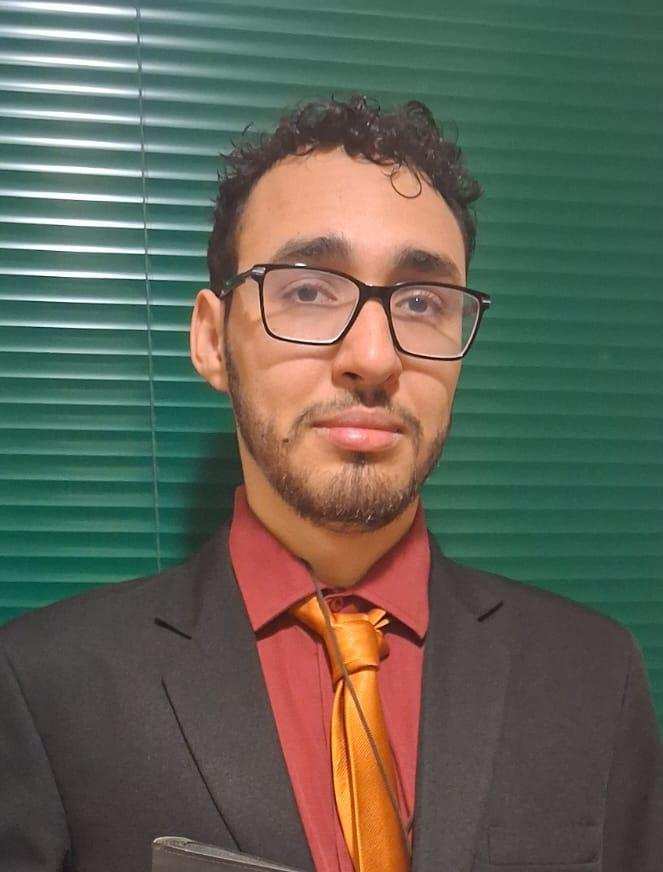
Formado em Física (Bacharel e Licenciatura) pela universidade federal de Viçosa. Experiência em programação nas linguagens Python e Fortran, além em simulação de sistemas físicos nanomagnéticos através da ferramenta MuMax, no qual usou para fazer pesquisas durante a graduação. Também tem experiência com o Microscópio de Força Atômica (AFM) no qual usou para pesquisar o efeito SERS do ouro. Experiência em ensino, com 9 meses de projeto de extensão dando Monitorias de física para alunos do ensino médio da Escola Estadual Santa Rita De Cássia e para estudantes do EJA e ensino médio da Escola Estadual Effie Rolfs.
Introdução ao Arduíno
- CCE, sala 205
- 20 vagas
O Arduíno revolucionou a forma como interagimos com a tecnologia ao tornar a eletrônica e a programação acessíveis a qualquer pessoa. Neste minicurso teórico/prático e focado no essencial, os participantes aprenderão os conceitos fundamentais para sair do zero e criar seus próprios projetos interativos de automação e robótica em apenas duas horas. Durante a oficina, exploraremos a placa Arduíno Uno, seus componentes básicos (LEDs, resistores, botões e sensores) e o ambiente de desenvolvimento (IDE). Ao final, o participante terá noções de como ler sinais do mundo físico, processá-los via código e acionar dispositivos eletrônicos.
Luciano de Moura Guimarães
Professor associado do Departamento de Física da Universidade Federal de Viçosa (UFV). Doutor em Ciências (2011) pela Universidade Federal de Minas Gerais (UFMG), com enfoque em espectroscopia Raman ressonante aplicada ao estudo de nanomateriais de carbono, como nanotubos, grafeno e poliinas. Pós-doutorado (2012) no Laboratório de Espectroscopia Raman da UFMG, com ênfase em investigações sobre o efeito Raman intensificado por superfícies (SERS). Mestre em Física Aplicada (2006) e bacharel e licenciado em Física (2004) pela Universidade Federal de Viçosa. Durante a graduação e o mestrado, foram desenvolvidas pesquisas baseadas em espectroscopia no infravermelho próximo aplicada à tecnologia da madeira, eletrodeposição e caracterização de filmes semicondutores, respectivamente. Atualmente, minhas atividades de pesquisa envolvem estudos em espectroscopia Raman e fotoeletroquímica, com foco na caracterização e investigação de propriedades físico-químicas de materiais. Além disso, desenvolvo projetos nas áreas de eletrônica e instrumentação científica, utilizando plataformas de prototipagem e sistemas embarcados, como Arduíno e ESP32.
Introdução aos Sistemas Caóticos
- CCE, 4º andar
- 20 vagas
O objetivo do minicurso é desmistificar o conceito de "caos" na Física, buscando compreendê-lo de forma visual e intuitiva, sem a necessidade de matemática exaustiva. Partindo de demonstrações experimentais que contrastam a previsibilidade do pêndulo simples com a imprevisibilidade do pêndulo duplo, introduziremos a ferramenta conceitual mais importante da mecânica para mapear a complexidade: o espaço de fase. Ao traduzir o movimento dos sistemas em gráficos simples, os alunos descobrirão que o caos não é sinônimo de desordem ou de incapacidade matemática, mas sim um comportamento emergente repleto de padrões. Concluiremos mostrando como essa mesma abordagem visual e simples permite aos físicos estudar fenômenos fascinantes, como a estabilidade de órbitas na gravitação.
Timóteo César Fassoni
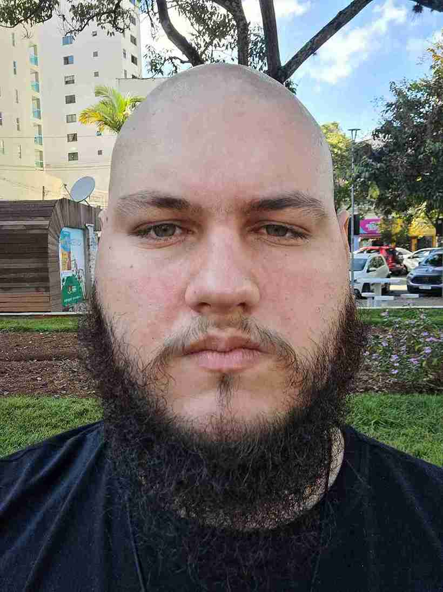
Estudante de Física (Bacharelado e Licenciatura) pela Universidade Federal de Viçosa com formação prevista para 2025/2. Durante a graduação, desenvolveu pesquisas de iniciação científica nas áreas de Sistemas Dinâmicos Contínuos e de Filippov, simulações de fluidos em reticulados com aplicação a meios porosos e análises de Linguagem Natural e sentimentos aplicadas a redes reais. Seu Trabalho de Conclusão de Curso aborda a conexão entre a Linguagem Natural e os Sistemas Complexos, com aplicações a dados reais. Atualmente, seu foco de estudo é em Sistemas Complexos e Linguística Qualitativa. Possui experiência como tutor em disciplinas fundamentais: cálculo diferencial e integral de uma variável real e fundamentos de mecânica.
LaTeX
- CCE, sala 203
- 10 vagas
O LaTeX é uma ferramenta amplamente utilizada na elaboração de artigos científicos, teses, dissertações e relatórios. Sua principal vantagem é permitir que o autor foque apenas na escrita e na organização do conteúdo, enquanto o sistema fica responsável pela formatação do documento.
Neste minicurso serão apresentados os principais conceitos do LaTeX, incluindo a estrutura de um documento, os comandos básicos de formatação, a inserção de figuras, tabelas e equações, além do gerenciamento de referências bibliográficas. Posteriormente, será realizada uma atividade prática para que os participantes possam aplicar os conceitos básicos na elaboração de documentos científicos.
Para realização da atividade prática e acesso ao conteúdo, o participante pode levar seu notebook ou utilizar os computadores da sala. Todas as instruções necessárias serão fornecidas na aula teórica do minicurso.
Kelly Aparecida Molica
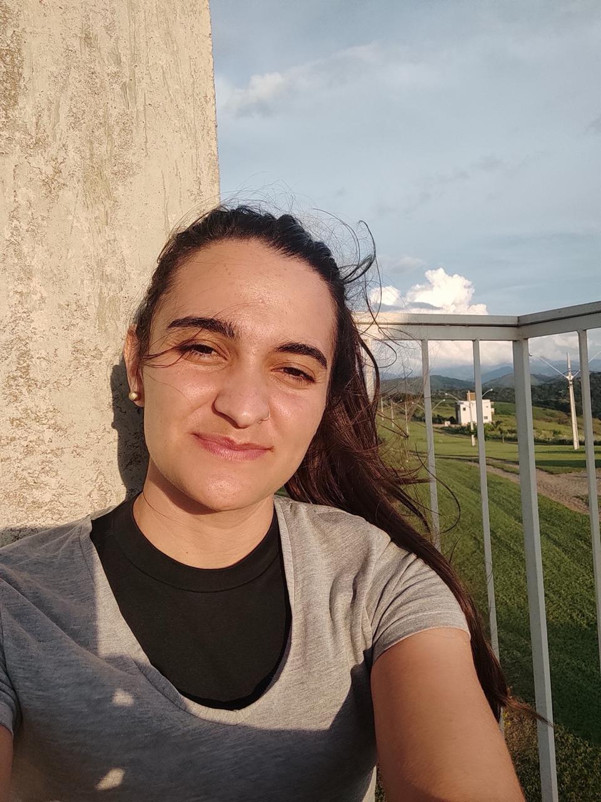
Graduada em Física pela Universidade Federal de Viçosa (2021) e mestre em Física pela Universidade Federal de Viçosa (2023). Atualmente, sou doutoranda em Física na mesma instituição. Realizo pesquisas nas áreas de Sistemas Complexos e Física Biológica, com enfoque no desenvolvimento de modelos computacionais para descrever e investigar os mecanismos envolvidos em sistemas de matéria ativa, tais como migração celular, agregação bacteriana, competição e alelopatia entre plantas, além da formação de padrões em movimento coletivo de animais.
Pinças ópticas e interações DNA-ligantes
- CCE, sala 103
- 10 vagas
Neste mini-curso apresentaremos a técnica experimental de Pinças Ópticas, cujo inventor Arthur Ashkin foi um dos vencedores do Prêmio Nobel de Física de 2018. Abordaremos os princípios básicos da técnica, partindo da física básica envolvida. Mostraremos na prática como montar e otimizar o setup básico experimental, executando algumas demonstração simples de captura e manipulação de micropartículas. Por fim, discutiremos algumas das principais aplicações da técnica, como estudos envolvendo biofísica de macromoléculas, mecânica celular e construção de máquinas térmicas microscópicas.
Márcio Santos Rocha
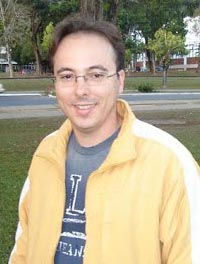
Possui graduação em Física - (bacharelado e licenciatura) pela Universidade Federal do Ceará (2001), mestrado em Física pela Universidade Federal de Minas Gerais (2004) e doutorado em Física pela Universidade Federal de Minas Gerais (2008). Desde 2008 é professor do Departamento de Física da Universidade Federal de Viçosa (UFV), sendo atualmente Professor Titular. Foi coordenador do Programa de Pós-graduação em Física da UFV de 2017 a 2022. Tem experiência na área de Física Experimental, com ênfase em ''Física Biológica'', ''Óptica Aplicada a Sistemas Biológicos'' e ''Manipulação Óptica de Microssistemas''. Coordena o Laboratório de Física Biológica da UFV, implantado pelo pesquisador nesta instituição. Atualmente é Coordenador da Câmara de Ciências Exatas e dos Materiais (CEX) da Fundação de Amparo à Pesquisa do Estado de Minas Gerais (FAPEMIG). Membro Associado da International Union of Pure and Applied Physics (IUPAP), Biological Physics Comission (2025-2027). Editor Executivo do International Journal of Biological Macromolecules (Elsevier) desde 2025. Website: LFB; Google Scholar; Web of Science; Scopus ID; ORCID
Técnicas experimentais
- CCE, 1º andar
- 16 vagas
Este minicurso prático oferece uma imersão direta nas técnicas da micro e nanofabricação, com foco em duas técnicas essenciais: a Litografia por Feixe de Elétrons (EBL) e a Microscopia Eletrônica de Varredura (SEM). Realizado inteiramente dentro do ambiente controlado de uma sala limpa, o treinamento guiará os participantes de forma visual e interativa pelas etapas de litografia e caracterização de estruturas em escala nanométrica. A partir do contato real com amostras, insumos específicos (como os resists ou resinas fotossensíveis) e os próprios equipamentos de ponta, você entenderá o funcionamento, os desafios práticos e o enorme potencial dessas tecnologias na pesquisa e no desenvolvimento tecnológico.
Além disso, o minicurso também irá explorar a técnica de deposição por evaporação catódica. A deposição por evaporação catódica (Sputtering) é atualmente uma das técnicas de PVD (Physical Vapor Deposition) mais populares no crescimento de filmes finos, seja na pesquisa científica ou mesmo na indústria. A técnica consiste em ejetar átomos de um material alvo através de transferência de momento por colisões. Experimentalmente, utilizam-se partículas altamente energizadas de gás inerte (tipicamente Argônio) em uma câmara de alto vácuo, que são aceleradas por campos elétricos DC ou AC. Os átomos ejetados do material alvo atingem uma superfície ou substrato, onde são condensados camada sobre camada.
Neste minicurso, será apresentado o equipamento comercial de sputtering instalado no Laboratório de Materiais Avançados (Laboratory of Advanced Materials, LAM) do Departamento de Física da Universidade Federal de Viçosa, seguido de uma discussão acerca dos fundamentos teóricos dos processos de crescimento de filmes finos por sputtering. Além disso, serão apresentadas as principais técnicas de medidas de transporte elétrico e magnético realizadas no LAM, utilizando as amostras crescidas.
Eloi Benicio de Melo Junior
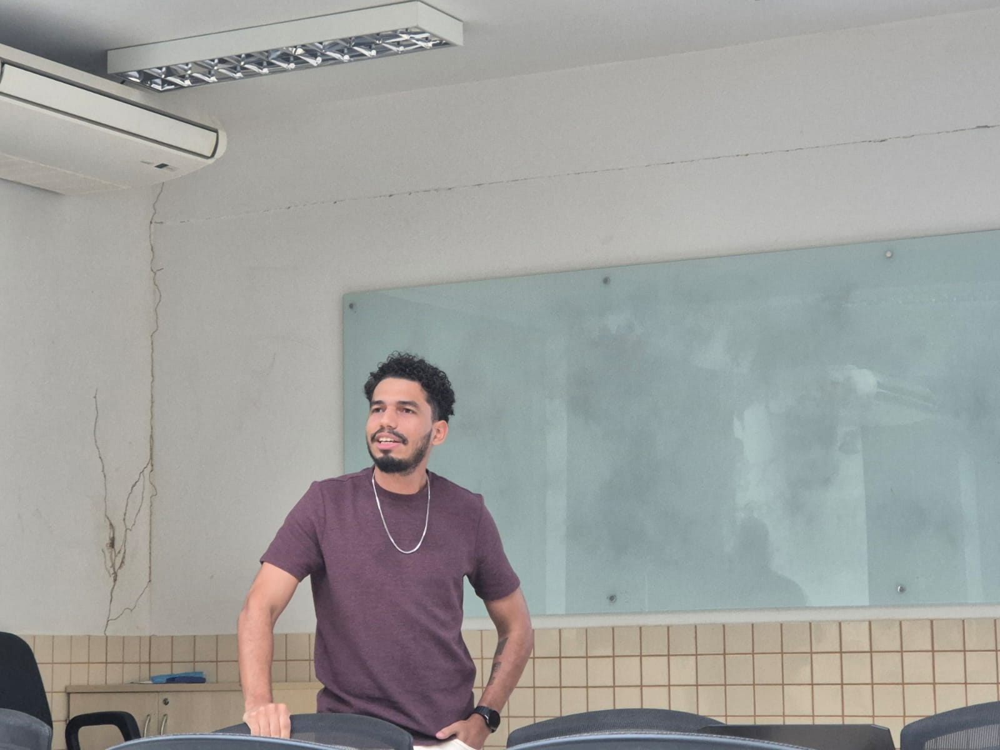
Doutor em Física pela Universidade Federal de Viçosa (UFV), com período de doutorado sanduíche na Scuola Normale Superiore di Pisa / National Enterprise for nanoScience and nanoTechnology (NEST - Pisa, Itália). Mestre em Física pela Pontifícia Universidade Católica do Rio de Janeiro (PUC-Rio) e Licenciado em Física pela Universidade Federal do Acre (UFAC). Possui experiência na área de Física da Matéria Condensada, com ênfase experimental e teórica em supercondutividade, micro e nanomagnetismo e spintrônica. Atua principalmente nos seguintes temas: efeito de campo em supercondutores, caracterização magnética e elétrica de materiais, medidas de transporte, instrumentação científica e Ensino de Física. Possui experiência em modelagem computacional e simulação numérica aplicada a sistemas supercondutores e a sistemas micromagnéticos.
Murilo Quirino de Andrade
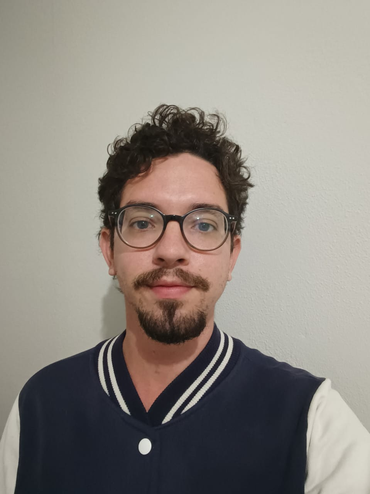
Graduado em Bacharel em Física pela Universidade Federal de Viçosa (UFV) em 2024; atuou como monitor nível 1 durante um ano (2019), na disciplina de Física 1 (FIS201); Teve experiência como bolsista de iniciação científica, de 08/2020 a 10/2023, com enfoque nas áreas de Nanomagnetismo e Spintrônica. Titulado Mestre em Física no Programa de Pós-Graduação do Departamento de Física da Universidade Federal de Viçosa (DPF-UFV) em 2025, com enfoque nas áreas de Spintrônica e Orbitrônica. Possui experiência em crescimento de filmes finos por Sputtering, medidas de transporte elétrico, correntes de spin e corrente orbital. Atualmente, cursa doutorado em Física no Programa de Pós-Graduação do Departamento de Física da Universidade Federal de Viçosa (DPF-UFV), investigando efeitos de interconversão spin-orbital-carga em filmes finos sob orientação do Prof. Dr. Joaquim Mendes (UFV).